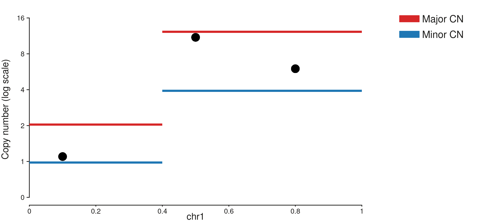
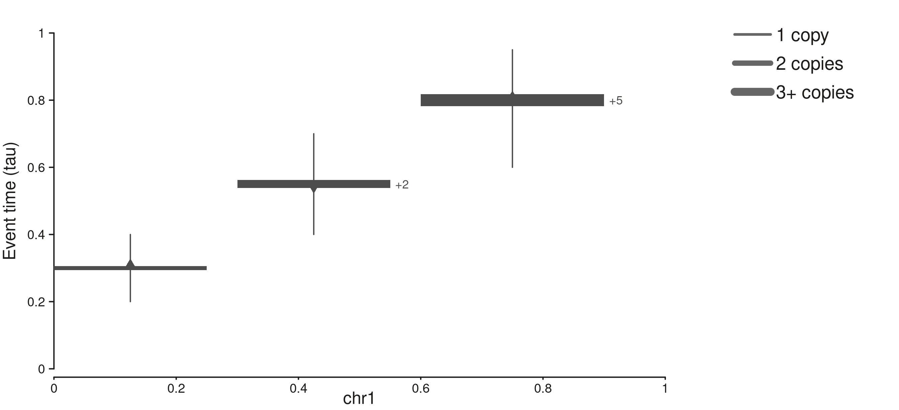
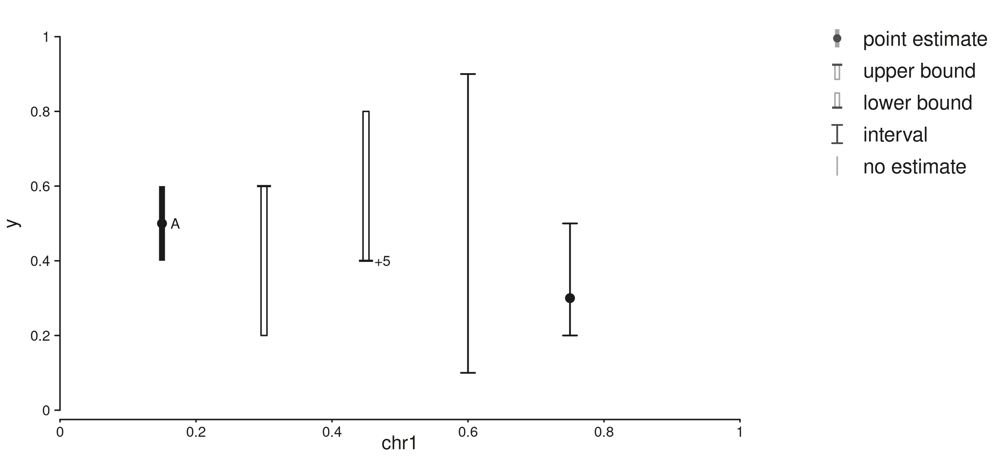
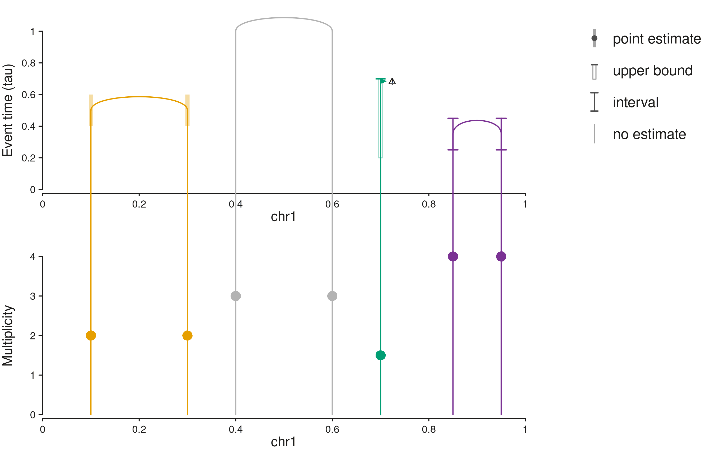
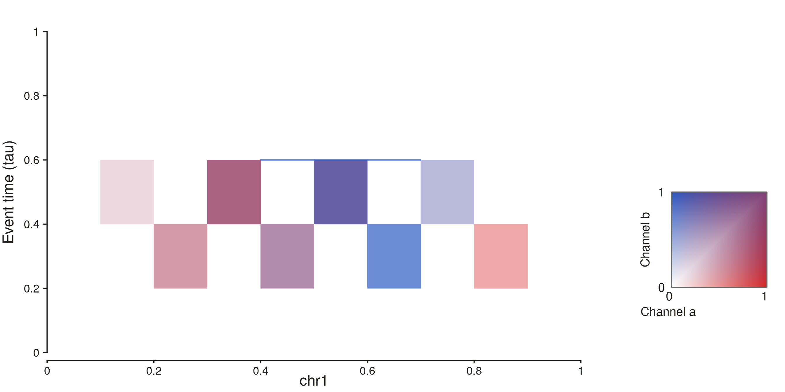
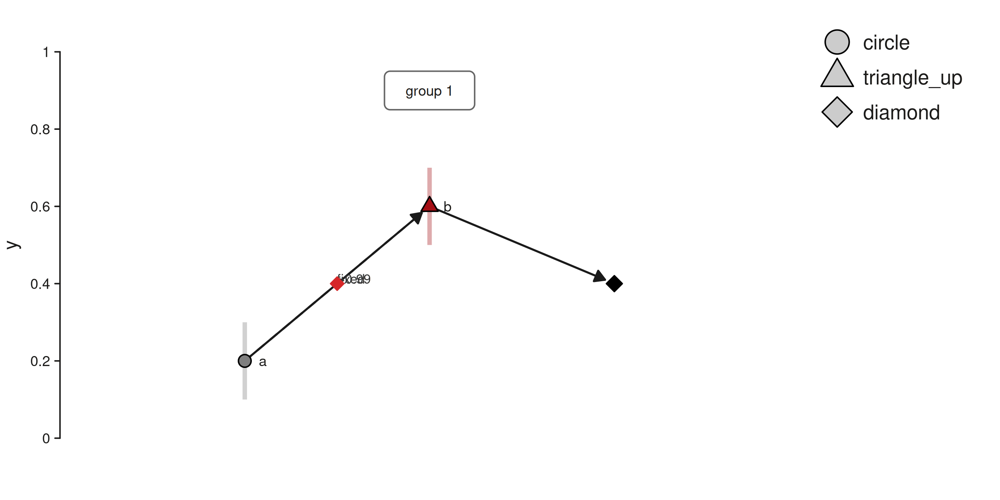
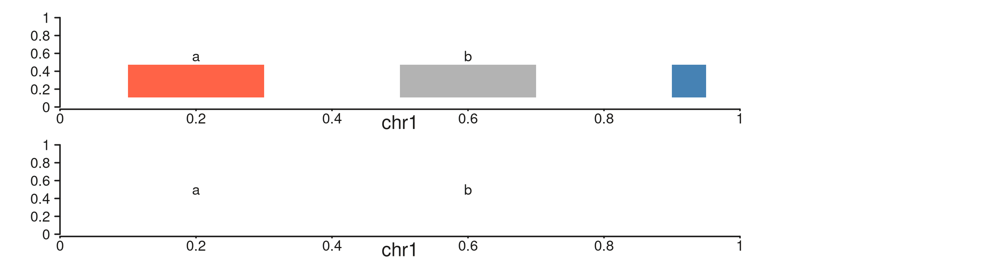

Event-timing plots stack several views of one genome:
structural-variant arches placed by event time, copy number with step
ribbons, intervals around estimated times, and a two-channel heatmap of
timing density. SeqPlotR provides generic elements for each view, and
one adapter, seq_rose_timing(), that turns a table set
written by ROSE into a plot built from those elements.
Every element draws what it is given. ROSE (or any other caller) supplies the positions, intervals, opacities, labels and colour categories, and SeqPlotR does no timing computation. Rows that carry a proxy bound are order bounds, not times: a bound says an event happened before or after a point, and the plots mark it as such.
The first half of this article uses toy data to show each element.
The second half runs the adapter on the table sets shipped in
inst/extdata/rose/timing.
win <- GRanges("chr1", IRanges(1, 1e6))
page <- aes(margins = list(top = 0, right = 0.2, bottom = 0.02, left = 0))Count axis and paired ribbons
seq_scale_count(max, log) builds a copy-number axis with
integer ticks. With log = TRUE it uses a pseudo-log
transform (values up to 1 stay linear, larger values are placed at
1 + log2(v)) and labels the ticks 0, 1, 2, 4, 8, 16. Every
element on the track, including seq_point and
seq_arch, receives the transform, so values are given in
count units.
seq_paired_ribbon() draws two thin ribbons per span:
y_up upward and y_down downward.
bands <- GRanges("chr1", IRanges(c(1, 4e5), c(4e5, 1e6)), major = c(2, 12), minor = c(1, 4))
snv <- GRanges("chr1", IRanges(c(1e5, 5e5, 8e5), width = 1), m = c(1.1, 11, 6))
seq_plot(aesthetics = page) %+%
seq_track(
track_id = "cn", windows = win,
scale_y = seq_scale_count(12, log = TRUE),
aesthetics = aes("axis.y.title.text" = "Copy number (log scale)"),
elements = list(
seq_paired_ribbon(bands, map(y_up = major, y_down = minor),
legend_labels = c(up = "Major CN", down = "Minor CN")),
seq_point(snv, map(y = m))
)
) -> p
p$plot()
Step ribbons
seq_step_ribbon() draws a span at height y
whose thickness scales with thickness. A vertical bar from
bar_lo to bar_hi marks the interval, and a
triangle of fixed size in millimetres points up or down whatever the
span width. Labels are printed as given, so a label such as
+5 can sit on a ribbon of thickness 3.
steps <- GRanges("chr1", IRanges(c(1, 3e5, 6e5), c(2.5e5, 5.5e5, 9e5)),
t = c(0.3, 0.55, 0.8), k = c(1, 2, 3), lab = c(NA, "+2", "+5"),
lo = c(0.2, 0.4, 0.6), hi = c(0.4, 0.7, 0.95),
dir = c("up", "down", "up"))
seq_plot(aesthetics = page) %+%
seq_track(
track_id = "steps", windows = win,
scale_y = seq_scale_continuous(limits = c(0, 1)),
aesthetics = aes("axis.y.title.text" = "Event time (tau)"),
elements = list(
seq_step_ribbon(steps, map(y = t, thickness = k, label = lab, bar_lo = lo,
bar_hi = hi, pointing = dir),
legend_labels = c("1" = "1 copy", "2" = "2 copies", "3" = "3+ copies"))
)
) -> p
p$plot()
Interval glyphs
seq_interval_glyph() marks an anchor with one of five
glyphs: point (a point with a bar), latest and
earliest (a cap with an open bar, for one-sided bounds),
interval (a bracket, with a point only when y
is given) and untimed (nothing at the anchor). Rows with
glyph hidden are dropped.
seq_glyph_legend_keys() builds matching legend keys.
g <- GRanges("chr1", IRanges(c(1, 2, 3, 4, 5) * 1.5e5, width = 1),
y = c(0.5, 0.6, 0.4, NA, 0.3), lo = c(0.4, 0.2, 0.3, 0.1, 0.2),
hi = c(0.6, 0.7, 0.8, 0.9, 0.5),
kind = c("point", "latest", "earliest", "interval", "interval"),
lab = c("A", NA, "+5", NA, NA))
seq_plot(aesthetics = page) %+%
seq_track(
track_id = "glyphs", windows = win,
scale_y = seq_scale_continuous(limits = c(0, 1)),
elements = list(
seq_interval_glyph(g, map(y = y, bar_lo = lo, bar_hi = hi, glyph = kind, label = lab),
legend_all = TRUE)
)
) -> p
p$plot()
Cross-track arches
seq_cross_arch() is added to the track that holds the
arch stems and names the track whose axis places the arch tops with
target. The two tracks must have the same windows. The top
is given in the target track’s units, so an arch top lines up with a
point or glyph drawn at the same value on the target track. Optional
fields draw interval bars on both stems (glyph,
bar_lo, bar_hi), a marker on each stem
(marker) and a caution mark (caution). A row
without x1 becomes a single stem, and a row with no
top reaches the top of the target axis. An anchor outside
every window stops with a message that names the row.
arch <- data.frame(
chr = "chr1", pos1 = c(1e5, 4e5, 7e5, 8.5e5), pos2 = c(3e5, 6e5, NA, 9.5e5),
top = c(0.5, NA, 0.7, 0.35), g = c("point", "untimed", "latest", "interval"),
lo = c(0.4, NA, 0.2, 0.25), hi = c(0.6, NA, NA, 0.45), m = c(2, 3, 1.5, 4),
col = c("#E69F00", "grey70", "#009E73", "#7B3294"), ca = c(FALSE, FALSE, TRUE, FALSE)
)
seq_plot(aesthetics = page) %+%
seq_track(track_id = "sv", windows = win, direction = "under",
scale_y = seq_scale_continuous(limits = c(0, 1)),
aesthetics = aes("axis.y.title.text" = "Event time (tau)")) %+%
seq_track(
track_id = "cn", windows = win, direction = "under",
scale_y = seq_scale_continuous(limits = c(0, 4)),
aesthetics = aes("axis.y.title.text" = "Multiplicity"),
elements = list(
seq_cross_arch(arch, map(chrom0 = chr, x0 = pos1, chrom1 = chr, x1 = pos2, top = top,
glyph = g, bar_lo = lo, bar_hi = hi, marker = m,
color = col, caution = ca),
target = "sv", aesthetics = aes(bar_alpha = 0.35, glyph_points = FALSE),
legend_extra = c(unname(seq_glyph_legend_keys(c("point", "latest", "interval", "untimed")))))
)
) -> p
p$plot()
Two-channel heatmap
seq_tile_mix() colours each tile by mixing two
intensities in [0, 1]: the hue moves from
color_a to color_b with the share of
b, and the larger intensity sets the depth. Tiles with both
intensities zero are not drawn. By default it adds a two-dimensional key
from seq_legend_2d(); pass legend = FALSE to
omit it. Bound lines compose from seq_segment().
tiles <- GRanges("chr1", IRanges(seq(1, 9e5, by = 1e5), width = 1e5),
lo = rep(c(0.2, 0.4), length.out = 9), hi = rep(c(0.4, 0.6), length.out = 9),
a = c(0, 0.2, 0.5, 0.8, 0.6, 0.3, 0, 0.1, 0.4),
b = c(0, 0.1, 0.2, 0.5, 0.6, 0.9, 0.7, 0.4, 0))
bound <- GRanges("chr1", IRanges(4e5, 7e5), y = 0.6)
seq_plot(aesthetics = page) %+%
seq_track(
track_id = "heat", windows = win,
scale_y = seq_scale_continuous(limits = c(0, 1)),
aesthetics = aes("axis.y.title.text" = "Event time (tau)"),
elements = list(
seq_tile_mix(tiles, map(y_min = lo, y_max = hi, a = a, b = b),
aesthetics = aes(color_a = "#D62728", color_b = "#2B59C3"),
legend = seq_legend_2d("#D62728", "#2B59C3",
x_title = "Channel a", y_title = "Channel b")),
seq_segment(bound, map(x = start, x_end = end, y = y, y_end = y), aes(color = "#2B59C3"))
)
) -> p
p$plot()
Node-link panel
seq_node_link() draws nodes, edges and group boxes at
the positions given. It runs no layout algorithm. Nodes can carry an
interval bar and one of five shapes. Edges can carry an arrow, a label
printed as given and a flag marking a conflict.
nodes <- data.frame(id = c("A", "B", "C"), x = c(1, 2, 3), y = c(0.2, 0.6, 0.4),
bar_lo = c(0.1, 0.5, NA), bar_hi = c(0.3, 0.7, NA),
shape = c("circle", "triangle_up", "diamond"),
fill = c("#7F7F7F", "#A50F15", "black"), label = c("a", "b", NA))
edges <- data.frame(from = c("A", "A", "B"), to = c("B", "B", "C"),
arrow = c(TRUE, FALSE, TRUE), label = c("fixed", ">0.99", NA),
flag = c(FALSE, TRUE, FALSE), linetype = c(1, 2, 1))
groups <- data.frame(x = 2, y = 0.9, label = "group 1")
seq_plot(aesthetics = page) %+%
seq_track(
track_id = "nodes", windows = GRanges("events", IRanges(1, 1)),
scale_x = seq_scale_continuous(limits = c(0.4, 3.6)),
scale_y = seq_scale_continuous(limits = c(-0.03, 1.03)),
aesthetics = aes("axis.x.visible" = FALSE),
elements = list(seq_node_link(nodes = nodes, edges = edges, groups = groups))
) -> p
p$plot()
Span strips
seq_span_strip() labels spans with a coloured bar. With
bar_height = 0 only the labels are drawn.
spans <- GRanges("chr1", IRanges(c(1e5, 5e5, 9e5), c(3e5, 7e5, 9.5e5)),
nm = c("a", "b", NA), col = c("tomato", NA, "steelblue"))
seq_plot(aesthetics = page) %+%
seq_track(track_id = "bars", windows = win, scale_y = seq_scale_continuous(limits = c(0, 1)),
elements = list(seq_span_strip(spans, map(label = nm, fill = col), aes(bar_y = 0.3)))) %+%
seq_track(track_id = "text", windows = win, direction = "under",
scale_y = seq_scale_continuous(limits = c(0, 1)),
elements = list(seq_span_strip(spans, map(label = nm), aes(bar_height = 0)))) -> p
p$plot()
Extending the elements
The base classes SeqElementR6, SeqLinkR6,
SeqArchR6 and SeqPointR6 are exported so that
new elements can subclass them without reaching into the package.
seq_to_canvas(x, y, panel) maps a data position through a
panel, applying the track’s y transform, and is what
seq_cross_arch() uses to place tops on another track. A
link’s prep() receives the panels of all tracks in
layout_all_tracks, named by track_id.
The ROSE adapter
ROSE writes a plot_timing table set: windows,
copy-number bands, SNV points, SV arches, copy-number steps, glyphs, the
heatmap and its bounds, poset nodes, edges and groups, annotations and
settings. seq_read_table_set() reads it from a directory
(or an in-memory list) and checks the schema version; an unsupported
version or a missing column stops with a message that names the set,
table and column.
tm <- system.file("extdata", "rose", "timing", package = "SeqPlotR")
list.files(tm)
#> [1] "example" "sim_bfb_amplicon" "sim_simple_gain" "sim_wgd_losses"
tb <- seq_read_table_set(file.path(tm, "sim_bfb_amplicon"), "plot_timing")
names(tb)
#> [1] "windows" "cn_bands" "snv_points" "sv_arches"
#> [5] "cn_steps" "glyphs" "heatmap" "heatmap_bounds"
#> [9] "poset_nodes" "poset_edges" "poset_groups" "annotations"
#> [13] "settings"
attr(tb, "schema_version")
#> [1] 1seq_rose_timing(x, layout, poset_view, ...) accepts a
directory or a list and returns a SeqPlot built from the
elements above. It only selects rows, renames columns and looks up
colours in a palette; every position, interval, opacity and label comes
from the tables.
layout |
Tracks |
|---|---|
"arches" |
SV event time with arches over copy number and step ribbons |
"order" |
arches placed at their poset layer |
"heatmap" |
arches over a two-channel timing heatmap |
"poset" |
node-link view (poset_view = "poset",
"hasse" or "groups") |
Annotation and glyph labels get a strip above the genomic tracks, and
an ideogram (or, with plain = TRUE, a genomic axis) closes
the plot. The palette argument replaces any of the default
colour sets by name, for example
palette = list(sv = c(DEL = "black")).
An amplicon with five SVs
The arches layout shows each SV at its estimated event time on the
top track. Bars are intervals reported by ROSE. The copy-number track
shows the major and minor copy number, SNV multiplicities and the arch
ends, and the bottom track shows copy-number gain and loss steps at
their event times, with +2 marking a two-copy step.
bfb <- file.path(tm, "sim_bfb_amplicon")
p <- seq_rose_timing(bfb, layout = "arches")
p$plot()
The order layout places the same arches at their layer in the partial order instead of at a time (layer 0 is unordered).
p <- seq_rose_timing(bfb, layout = "order")
p$plot()
The heatmap layout replaces the step ribbons with the timing density of gains (red) and losses (blue).
p <- seq_rose_timing(bfb, layout = "heatmap")
p$plot()
The poset layout draws the events of the partial order at their time
estimates. An edge is labelled with the probability that the first event
precedes the second, or fixed for an order given as a
constraint.
p <- seq_rose_timing(bfb, layout = "poset")
p$plot()
poset_view = "hasse" keeps only the reduction edges, and
"groups" draws the groups of events that cannot be
separated.
p <- seq_rose_timing(bfb, layout = "poset", poset_view = "hasse")
p$plot()
Whole-genome doubling and losses
This fixture has three windows and no SV arches. The WGD has no
position, so it is drawn as a black line across every window at its
time. Glyphs marked earliest and latest are
proxy rows: they place an event before or after a point, so they are
drawn as one-sided bounds rather than as times. SNVs above the axis
maximum are excluded with a message.
wgd <- file.path(tm, "sim_wgd_losses")
p <- seq_rose_timing(wgd, layout = "arches")
p$plot()
#> 3 out-of-bounds data points excluded! (seq_point)
p <- seq_rose_timing(wgd, layout = "heatmap")
p$plot()
#> 3 out-of-bounds data points excluded! (seq_point)
p <- seq_rose_timing(wgd, layout = "poset", poset_view = "groups")
p$plot()
A single gain
gain <- file.path(tm, "sim_simple_gain")
p <- seq_rose_timing(gain, layout = "arches", plain = TRUE)
p$plot()
#> 6 out-of-bounds data points excluded! (seq_point)
The returned plot can be extended like any other. Here an extra track with the same windows is added at the bottom.
wg <- seq_read_table_set(gain, "plot_timing")$windows
wg <- GRanges(wg$chr, IRanges(wg$start, wg$end))
p <- seq_rose_timing(gain, layout = "arches") %+%
seq_track(track_id = "extra", windows = wg, direction = "under", track_height = 0.4)
p$plot()
#> 6 out-of-bounds data points excluded! (seq_point)
An illustrative example set
inst/extdata/rose/timing/example is a small
plot_timing table set written by hand to show cases the
simulated fixtures lack. It is an illustrative example, not ROSE output
and not a simulation: the numbers were chosen to exercise the drawing
rules and carry no biological meaning. It has a copy-number maximum
above 8 (log axis, cn_log_axis TRUE), a single-breakend SV
(SGL, no second anchor), an SV without timing, a translocation, an ecDNA
caution, a hidden glyph, annotation rows, a whole-genome doubling, and
conflict, unordered and exchangeable poset edges.
ex <- file.path(tm, "example")
p <- seq_rose_timing(ex, layout = "arches", plain = TRUE, show_hidden = TRUE)
p$plot()
The log copy-number axis, the SGL arch (grey, one end) and the untimed SV (drawn to the top of the axis without a bar) are on the first two tracks. The WGD is the black line across all windows on the lower track, and the strip at the very bottom lists the hidden glyph. In the order layout the WGD is drawn at its poset layer.
p <- seq_rose_timing(ex, layout = "order", plain = TRUE)
p$plot()
p <- seq_rose_timing(ex, layout = "heatmap", plain = TRUE)
p$plot()
The poset shows the conflict marker, the dashed unordered and exchangeable edges, and the WGD diamond.
p <- seq_rose_timing(ex, layout = "poset")
p$plot()
Limits of the tables
The adapter uses only what the tables carry. There is no flag saying
whether the heatmap holds SNV-derived density, the copy-number axis
maximum is derived from the tables rather than stored, and annotation
colours are assigned from flexoki_palette() because the
tables name classes without a palette. Rows without a position (a WGD)
are drawn across every window.